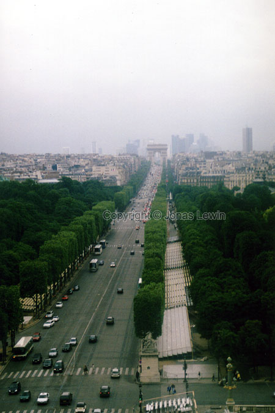
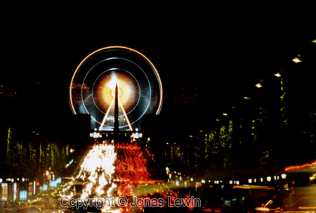
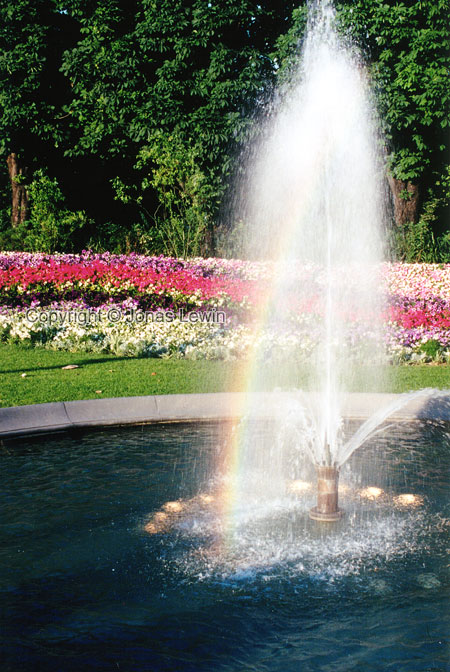
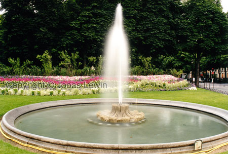

France, Paris, 2001-05.
|
Sitting in the Ferris wheel, looking down at the Champs Elysées. View from the other end, and this time much later in the day. The Ferris wheel looks as if it was spinning extremely fast. In the middle of the Champs Elysées, you find a few fountains like this one. Quite nice.  |